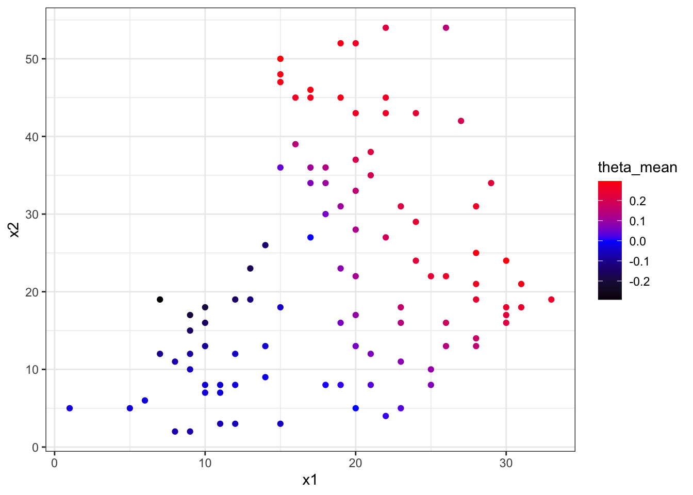
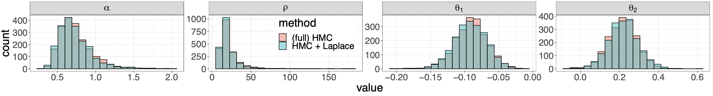
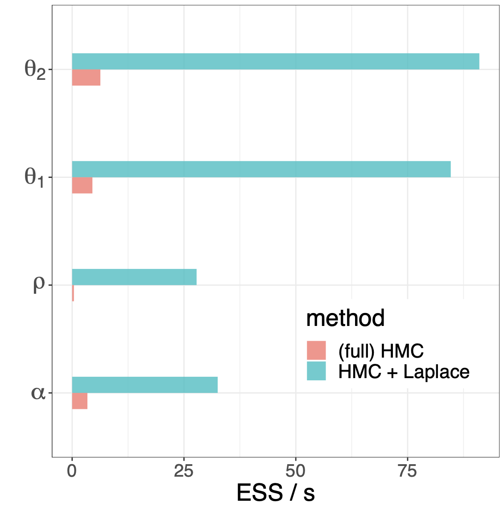
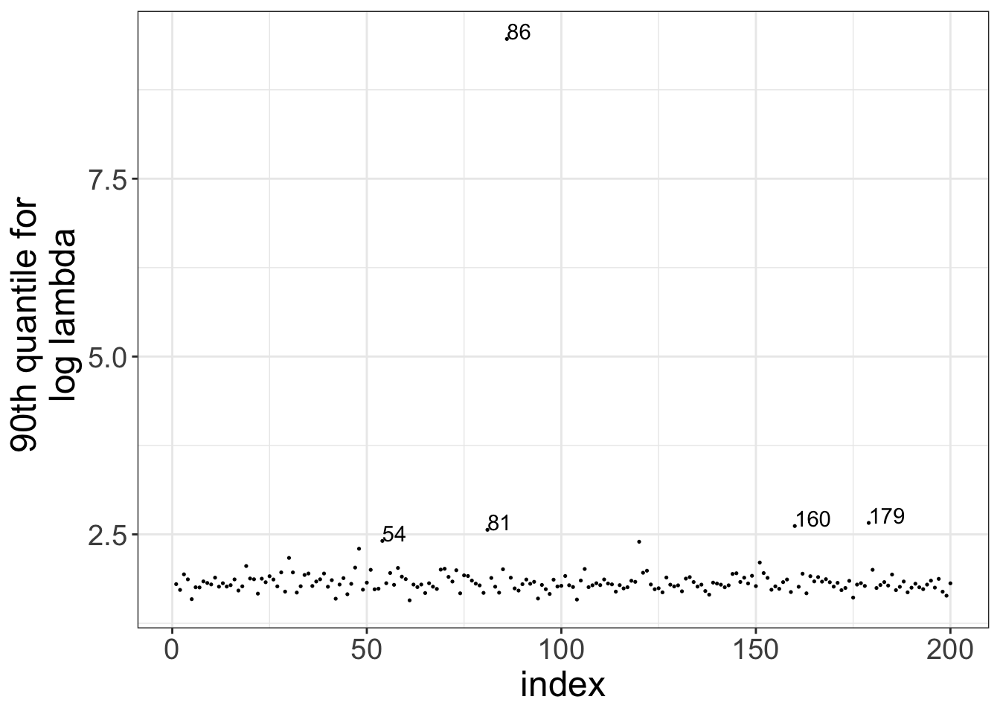
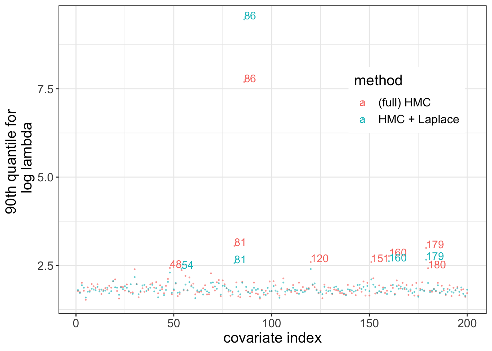
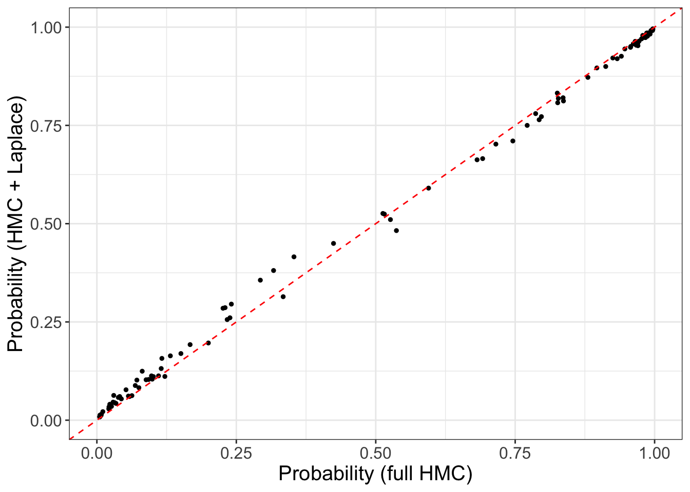

Approximate Bayesian inference for latent Gaussian models in Stan
Abstract
Latent Gaussian models are a common class of Bayesian hierarchical models, characterized by a normally distributed local parameter. The posterior distribution of such models often induces a geometry that frustrates sampling algorithms, such as Stan’s Hamiltonian Monte Carlo (HMC), resulting in an incomplete or slow exploration of the parameter space. To alleviate these difficulties, we can marginalize out the normal local variables and run HMC on a well-behaved subset of the parameters. Unfortunately, exact marginalization is not possible in all but a few simple cases. It is however possible to do an approximate marginalization, using an embedded Laplace approximation. We introduce a prototype suite of Stan functions that support this approximation scheme, and demonstrate the method on a Gaussian process disease map and a sparse kernel interaction model.Introduction
Latent Gaussian models are a class of hierarchical models that put a normal prior on the latent variable. Their general form is \[\begin{equation} \begin{split} \phi & \sim \pi(\phi), \\ \theta & \sim \mathrm{Normal}(0, K(\phi)), \\ y & \sim \pi(y \mid \theta, \phi), \end{split} \tag{1} \end{equation}\] where \(y\) denotes the observations, \(\theta\) the latent variable, and \(\phi\) the remaining unobserved variables in the model. Bearing a slight abuse of language, we will call \(\phi\) the hyperparameters. Typically, single observations \(y_i\) are independently distributed and only depend on a linear combination of the latent variables, that is \(\pi(y_i \mid \theta, \phi) = \pi(y_i \mid a^T_i \theta , \phi)\) for some appropriate vector \(a\). In many applications, \(\theta_j\) denotes a group parameter that informs the distribution of observations in group \(j\). Latent Gaussian models find a broad range of applications; and because of their normal prior are subject to convenient mathematical manipulations that can improve Bayesian inference.
Markov chains Monte Carlo (MCMC) sampling can struggle with the geometry induced by such models, for instance when dealing with funnel shapes, and more generally high curvature densities (Neal 2003; Betancourt and Girolami 2013). Much of the geometric grief we experience comes from the interaction between \(\phi\) and \(\theta\).
An alternative approach to MCMC is to marginalize out \(\theta\), \[ \pi(y \mid \phi) = \int \mathrm \pi(y \mid \theta, \phi) d \theta, \] and perform standard inference on \(\phi\). If the likelihood, \(\pi(y \mid \theta, \phi)\), is non-Gaussian, exact marginalization is not possible. Instead, we can use an embedded Laplace approximation, and compute an approximate marginal distribution, \(\pi_\mathcal{G}(y \mid \phi)\). This is the driving principle behind the packages INLA (Rue et al. 2017; Rue and Chopin 2009), GPStuff (Vanhatalo et al. 2013), and TMB (Kristensen et al. 2016). We now incorporate these ideas in Stan, notably building on the algorithmic work by Rasmussen and Williams (2006).
Why Stan? To perform inference on \(\phi\), we want to use Stan’s dynamic HMC, as opposed to more standard techniques, such as numeric quadrature. This allows us to tackle the case where \(\phi\) is high-dimensional and has a non-unimodal posterior distribution.
Embedding the Laplace approximation inside Stan’s architecture presents several technical challenges. Anecdotally, our first implementation of the Laplace approximation took \(\sim\) 2,000 seconds to evaluate and differentiate the approximate log marginal density (for a certain test problem). The current implementation performs the same task in \(\sim\) 0.1 second. The main technical innovation of our implementation is an adjoint-differentiation method, which can handle any covariance matrix, \(K\), and scales when \(\phi\) is high-dimensional (Margossian et al. 2020).
Installation
The functions we use in this notebook are prototypes
and currently not part of Stan’s release version.
In order to use them, we must first install the correct branch of Stan.
On Mac, this can be done by running the install.sh script,
in the script directory, from a terminal window:
cd script
./install.shThe script produces a CmdStan and a Stanc3 folder with all the requisite code. It does not install RStan or PyStan. Instead, we will use CmdStanR, a lightweight wrapper for CmdStan, in order to interface Stan with R.
R setup
The full R code can be found in script/run_models.r.
set.seed(1954)
.libPaths("~/Rlib") # Adjust to your setting!
library(parallel)
library(rstan) # Use to read in data and for post-hoc analysis.
library(cmdstanr) # Use to compile and fit the model.
# Set the path to the cmdstan directory installed with install.sh
set_cmdstan_path("script/cmdstan")
library(ggplot2)Gaussian variables (hiding in the wild)
To begin, let us examine two examples of a latent Gaussian model.
Example 1: sparse linear regression
Consider the following linear regression model \[\begin{eqnarray*} \phi & \sim & \pi(\phi), \\ \beta & \sim & \mathrm{Normal}(0, \Sigma(\phi)) \\ y & \sim & \pi(y \mid X \beta), \end{eqnarray*}\] where \(X\) is a design matrix and \(\beta\) the regression coefficients. The prior on \(\beta\) may, for example, be a sparsity inducing prior. The above data generating process has a latent Gaussian model structure. Observe that each observation \(y_i\) depends on a linear combination of the latent variables, \(\sum_j x_{ij} \beta_j\).
We can reformulate this model by introducing another latent Gaussian variable, \(\theta = X \beta\). Now, \(y_i\) only depends on \(\theta_i\), and the model is \[\begin{eqnarray*} \phi & \sim & \pi(\phi), \\ \theta & \sim & \mathrm{Normal}(0, X \Sigma(\phi) X^T), \\ y & \sim & \pi(y \mid \theta). \end{eqnarray*}\] Both formulations are of interest. The first one is more natural, and emphasizes \(\beta\), presumably a variable of interest. The benefit of the second formulation is mostly technical: the likelihood \(\pi(y \mid \theta)\), as well as its higher-order derivatives, are easier to manipulate.
Example 2: Gaussian process
The \(\theta\)’s in equation (1) can be the realizations of a Gaussian process – a non-parametric function –, which then inform the observational distribution of \(y\). For an introduction to the subject in Stan, see Trangucci (2017) and Betancourt (2017). Quite remarkably, to model a Gaussian process, it suffices to study a finite number of realizations, which follow a normal distribution \[ \theta \sim \mathrm{Normal}(0, K(\phi)). \] Roughly speaking, the covariance, \(K\), controls how quickly and how much the Gaussian process varies. A classic example for \(K\) is the squared exponential kernel, with \((i, j)^\mathrm{th}\) element defined as \[ K_{ij} = \alpha^2 \exp \left ( - \frac{||x_i - x_j||^2}{\rho^2} \right ) \] where \(x_i\) designates the coordinate of observation \(y_i\). In certain applications, \(K\) takes a much less trivial form, e.g. (Agrawal et al. 2019). The hyperparameter in this example comprises \(\alpha\) and \(\rho\), for which we can construct appropriate priors.
Typically, \(\pi(y_i \mid \theta, \phi) = \pi(y_i \mid \theta_i, \phi)\), meaning that for each observation, the model includes a latent variable. There is no formal constraint on the likelihood. Some examples:
- \(\pi(y_i \mid \theta_i, \phi) = \mathrm{Normal}(\theta_i, \sigma^2)\)
- \(\pi(y_i \mid \theta_i, \phi) = \mathrm{Poisson} \left ( \exp \theta_i \right)\)
- \(\pi(y_i \mid \theta_i, \phi) = \mathrm{Bernoulli} ( \mathrm{logit} \theta_i)\)
Tools for Bayesian inference
Our goal is to characterize the posterior distribution \[ \pi(\theta, \phi \mid y). \] A tool of choice is Markov chains Monte Carlo (MCMC), and in particular the dynamic Hamiltonian Monte Carlo (HMC) sampler provided by Stan (Betancourt 2018; Hoffman and Gelman 2014).
MCMC has been widely successful in this setting but there are nevertheless known challenges when fitting multilevel models. The interaction between \(\phi\) and \(\theta\) can indeed create complicated geometries, such as funnel shapes. When the Markov chain cannot overcome these geometric pathologies, we observe divergent transitions, indicating our inference may be bias. We can often bypass these issues by reparameterizing the model and fine-tuning HMC. But this process can be cumbersome, especially when working on computationally intensive models. Finding an acceptable parameterization and properly tuning HMC usually requires multiple fits, and the burden is that much more important when each fit takes several hours. One example is the prostate cancer classification model discussed by (Piironen and Vehtari 2017) and (Margossian et al. 2020).
Given much of our geometric grief comes from the interaction between \(\theta\) and \(\phi\), it stands to reason that we may alleviate these issues by marginalizing out \(\theta\) and computing \[ \pi(\phi \mid y) = \int \pi(\theta, \phi \mid y) \mathrm d \theta. \] We can then run MCMC, or any standard inference technique, on \(\phi\). It is furthermore possible to recover samples for \(\theta\), if we can construct the conditional distribution \[ \pi(\theta \mid \phi, y). \]
Unfortunately, in all but a few simple cases we cannot calculate \(\pi(\phi \mid y)\) and \(\pi(\theta \mid \phi, y)\). However, exploiting the fact \(\theta\) has a normal prior, we can approximate these distributions using a Laplace approximation.
Exact Marginalization
Let us now return to the Gaussian process we previously introduced. Suppose that the observational distribution is normal, with the \(y_i\)’s independent and each only depending on \(\theta_i\). That is \[\begin{eqnarray*} \pi(\theta \mid \phi) & = & \mathrm{Normal}(0, K(\phi)), \\ \pi(y \mid \theta, \phi) & = & \mathrm{Normal}(\theta, \sigma^2 I), \end{eqnarray*}\] where \(I\) is the identity matrix. Then \[ \pi(y_i \mid \phi) = \mathrm{Normal}(0, K(\phi) + \sigma^2 I). \] Using an argument of conjugacy, \[ \pi(\theta \mid y, \phi) = \mathrm{Normal} \left ( \left(K^{-1} + \frac{n}{\sigma^2} I \right)^{-1} \frac{1}{\sigma^2} y, \left(K^{-1} + \frac{n}{\sigma^2} I \right)^{-1} \right). \]
These equations motivate the following approach to fit these models in Stan.
- run HMC on \(\phi\), by encoding \(\pi(\phi)\) and \(\pi(y \mid \phi)\)
in the
modelblock. - in
generated quantities, sample \(\theta\) from \(\pi(\theta \mid y, \phi)\).
Efficient Stan code for this procedure can be found in the case study by Betancourt (2017).
What have we gain from doing this? The main benefit is that MCMC now only explores the parameter space of \(\phi\), which is geometrically better behaved. In some instances, \(\mathrm{dim}(\phi) \ll \mathrm{dim}(\theta)\), and the Monte Carlo problem becomes low dimensional, which can lead to an important speed up. Note that, when fitting this model, the computation is dominated by evaluation and differentiation of \(\log \pi(y \mid \phi) + \log \pi(\phi)\), which takes place several times per iteration. The sampling of \(\theta\), which requires no differentiation and only occurs once per iteration, is by comparison relatively cheap.
Approximate marginalization
Suppose now that the likelihood is not normal. For example it may be a Poisson log, meaning \[\begin{equation} \pi(y_i \mid \theta, \phi) = \mathrm{Poisson}(\exp \theta_i). \end{equation}\] We no longer have an analytical expression for \(\pi(y \mid \theta)\) and \(\pi(\theta \mid \phi, y)\). We can however approximate both using the Laplace approximation \[ \pi_\mathcal{G}(\theta \mid \phi, y) \approx \pi(\theta \mid \phi, y). \] The density on the left-hand side is a normal density that matches the mode, \(\theta^*\), and the curvature of the density of \(\pi(\theta \mid \phi, y)\). We numerically determine the mode using a Newton solver; the curvature itself is the negative Hessian of the log density. We then have \[ \pi_\mathcal{G}(\phi \mid y) := \pi(\phi) \frac{\pi(\theta^* \mid \phi) \pi(y \mid \theta^*, \phi)}{\pi_\mathcal{G}(\theta^* \mid \phi, y) \pi(y)} \approx \pi(\phi \mid y). \] Note that, as usual with MCMC, we do not have to compute the normalizing term, \(1 / \pi(y)\). Equipped with this approximation, we can repeat the previously described sampling scheme.
But we now need to worry about the error this approximation introduces. When the likelihood is log-concave, \(\pi(\theta \mid \phi, y)\) is guaranteed to be unimodal. Some common densities that are log-concave include the normal, Poisson, binomial, and negative binomial densities, and in those instances the approximation is found to be very accurate. The Bernoulli distribution also observes log-concavity but it is understood that the approximation introduces a bias. Detailed analysis of the error can be found in references (e.g. Kuss and Rasmussen (2005), Vanhatalo, Pietiläinen, and Vehtari (2010), Cseke and Heskes (2011), Vehtari et al. (2016)). Evaluating the accuracy of the approximation for less traditional likelihoods constitutes a challenging and important avenue for future research.
Prototype Stan code
To enable the above scheme, we propose a new routine in Stan, which includes functions to compute \(\log \pi_\mathcal{G}(y \mid \phi)\) and sample from \(\pi_\mathcal{G}(\theta \mid \phi, y)\).
The general form of the function is
laplace_marginal_*, which returns \(\log \pi_\mathcal{G}(y \mid \phi)\), where*is the name of the desired observational distribution, followed bylpmffor discrete observations andlpdffor continuous ones.laplace_*_rng, which samples \(\theta\) from \(\pi_\mathcal{G}(\theta \mid \phi, y)\).
A use of the first function in the model block may look as follows
target += laplace_marginal_*(y | n, K, phi, x, delta, delta_int, theta0);In lieu of *, the user can specify an observational density by picking
from a list of common likelihoods.
y and n are sufficient statistics for the latent Gaussian variable \(\theta\).
K is a function that returns the covariance matrix and takes in
phi, x, delta, and delta_int as arguments.
theta_0 is the initial guess for the Newton solver we use to find the mode
of \(\pi(\theta \mid \phi, y)\).
In practice, setting theta_0 to a vector of 0’s works reasonably well.
The laplace_*_rng functions take in the same arguments and returns a vector.
Picking the likelihood
We plan to develop the Laplace functions for a set of common likelihoods. Currently the options are the Poisson with a log link and the Bernoulli with a logit link. For these functions, the sufficient statistics are
y: \(\sum_{i \in g(i)} y_i\), the sum of counts / successes in a group, parameterized by \(\theta_i\).n: \(\sum_{i \in g(i)} 1\), the number elements in a group parameterized by \(\theta _i\).
Our aim is to make the routine more flexible and allow the user to specify their own likelihood, but this presents two challenges: (i) the approximation may introduce a large error which we cannot diagnose, and (ii) insuring efficient computation in this set up presents technical challenges. For more, see the discussion in Margossian et al. (2020).
Specifying the covariance matrix
The user has full control over which covariance matrix they use. One of the technical innovation in our implementation is to support this flexibility while retaining computational efficiency, particularly as the dimension of \(\phi\) increases.
\(K\) is declared in the functions block and must of have one of two signatures:
matrix K(vector phi, matrix x, real[] delta, int[] delta_int) { }
matrix K(vector phi, vector[] x, real[] delta, int[] delta_int) { }phi contains the parameter dependent variables (and informs which derivatives
we compute when running HMC).
The other arguments encompass real data required to compute \(K\),
very much in the spirit of Stan’s numerical integrators and algebraic solvers.
There are devices to “pack and unpack” the relevant variables.
In future prototypes, this will be replaced with variadic arguments.
For example, the squared exponential kernel can be encoded as follows:
functions {
matrix K (vector phi, vector[] x, real[] delta, int[] delta_int) {
real alpha = phi[1];
real rho = phi[2];
return add_diag(cov_exp_quad(x, alpha, rho), 1e-8);
}
}Note that we added a jitter term of 1e-8 along the diagonal of \(K\) for numerical stability.
Disease map of Finland
The disease map of Finland by Vanhatalo, Pietiläinen, and Vehtari (2010), models the mortality count, due to alcoholism, across the country. The data is aggregated into \(n = 911\) counties. For computational convenience, we use \(n_\mathrm{obs} = 100\) randomly sampled counties. As data we have \(x\), the spatial coordinate of each county, \(y\), the count of deaths and \(y_e\), the standardized expected number of deaths.
Building the model
We start with the data block:
data {
int n_obs; // number of counties
int n_coordinates; // number of spatial dimension
int y[n_obs]; // death counts in each county
vector[n_obs] ye; // standardized expected number of deaths
vector[n_coordinates] x[n_obs]; // coordinates for each county.
}The disease is modeled using a Gaussian process and for each county we assign a latent realization of the process, \(\theta_i\). The likelihood is log Poisson, with an adjustment to the mean, \[ \pi(y_i \mid \theta) = \mathrm{Poisson} \left (y^i_e e^{\theta_i} \right). \] The Gaussian process itself is governed by a squared exponential kernel, with two hyper parameters: \(\alpha\) and \(\rho\). Our plan is to marginalize \(\theta\) out, so we only sample \(\alpha\) and \(\rho\) with HMC.
parameters {
real<lower = 0> alpha;
real<lower = 0> rho;
}In the model block, we specify our priors on \(\alpha\) and \(\rho\), which will be inverse-Gamma, and we increment the target density with the approximate marginal density, \(\log \pi_\mathcal{G}(y \mid \alpha, \rho)\).
model {
rho ~ inv_gamma(rho_location_prior, rho_scale_prior);
alpha ~ inv_gamma(alpha_location_prior, alpha_scale_prior);
target += laplace_marginal_poisson_log_lpmf(y | n_samples, ye, K,
phi, x, delta, delta_int, theta_0);
}Note that the function allows the user to pass ye as an additional argument.
We now need to fill in some gaps. The location and scale parameters for the priors
on \(\rho\) and \(\alpha\) can be passed as data.
K is specified in the functions block.
In the transformed data and transformed parameters block, we specify
the remaining arguments of laplace_marginal_log_poisson.
transformed data {
vector[n_obs] theta_0 = rep_vector(0, n_obs); // initial guess
real delta[0]; // dummy argument
int delta_int[0]; // dummy argument
int n_samples[n_obs] = rep_array(1, n_obs); // observations per counties
int n_phi = 2; // size of phi
}
. . .
transformed parameters {
vector[n_phi] phi = to_vector({alpha, rho});
}Finally, we generate posterior samples for \(\theta\) post-hoc.
generated quantities {
vector[n_obs] theta
= laplace_poisson_log_rng(y, n_samples, ye, K,
phi, x, delta, delta_int, theta_0);
}The full Stan model can be found in model/disease_map_ela.stan.
Fitting the model in R
# Read in data for 100 randomly sampled counties
data <- read_rdump("script/data/disease_100.data.r")
# Compile and fit the model with CmdStanR
modelName <- "disease_map_ela.stan"
mod <- cmdstan_model(paste0("script/model/", modelName))
num_chains <- 4
num_cores <- min(num_chains, detectCores())
fit <- mod$sample(
data = data, chains = num_chains, parallel_chains = num_cores,
iter_warmup = 1000, iter_sampling = 1000, seed = 123, refresh = 0)## Running MCMC with 4 parallel chains...
##
## Chain 2 finished in 17.3 seconds.
## Chain 3 finished in 17.8 seconds.
## Chain 1 finished in 18.4 seconds.
## Chain 4 finished in 18.7 seconds.
##
## All 4 chains finished successfully.
## Mean chain execution time: 18.0 seconds.
## Total execution time: 18.7 seconds.There are no warning messages. Let’s examine a summary of our fit for certain parameters of interest.
## # A tibble: 5 x 10
## variable mean median sd mad q5 q95 rhat ess_bulk
## <chr> <dbl> <dbl> <dbl> <dbl> <dbl> <dbl> <dbl> <dbl>
## 1 lp__ -3.46e+2 -3.46e+2 1.07 0.816 -3.48e+2 -3.45e+2 1.00 1283.
## 2 alpha 7.28e-1 6.95e-1 0.207 0.178 4.56e-1 1.10e+0 1.00 1754.
## 3 rho 2.02e+1 1.76e+1 10.0 6.00 1.05e+1 3.91e+1 1.00 1583.
## 4 theta[1] -9.17e-2 -9.08e-2 0.0245 0.0236 -1.32e-1 -5.27e-2 1.00 4041.
## 5 theta[2] 2.22e-1 2.21e-1 0.0793 0.0734 9.20e-2 3.48e-1 1.00 3909.
## # … with 1 more variable: ess_tail <dbl>For the examined parameters, \(\hat R < 1.01\), and the effective sample sizes
(ess_bulk and ess_tail) are large.
We may do further checks, such as examine the trace and density plots, to make sure our inference is reliable.
There are several ways to inspect the results and for a more detailed analysis, we refer the reader to Vanhatalo, Pietiläinen, and Vehtari (2010). In this notebook, we simply plot the mean Poisson log parameter, \(\theta\), for each county.
theta_mean <- fit$summary()[6:105, 2]$mean
plot_data <- data.frame(x1 = data$x[, 1],
x2 = data$x[, 2],
theta_mean = theta_mean)
plot <- ggplot(data = plot_data,
aes(x = x1, y = x2, color = theta_mean)) +
geom_point() + theme_bw() +
scale_color_gradient2(low = "black", mid = "blue", high = "red")
plot
This plot highlights regions which, per our analysis, are more at risk. There are several limitations worth pointing out. First we only used 100 counties, so the resolution is limited. It is of course possible to run the analysis on all 911 counties and get more fine-grained results. Secondly, this plot does not capture the posterior variance of our estimates. Including this information in a map is tricky, but strategies exist (e.g. use multiple maps).
Comparison to inference on the exact model
It is possible to fit this model without marginalizing
\(\theta\) out.
To do this, we must include \(\theta\) in the parameters
block, and revise the models block
to explicitly encode the full data generating process.
The Markov chain must now explore
the full parameter space, \((\alpha, \rho, \theta)\).
We will refer to this approach as full HMC.
The geometry of the posterior can be challenging
for full HMC, a problem we diagnose with divergent transitions.
To remove these issues,
we can use a non-centered parameterization
and increase the target step size, \(\delta_a\)
(argument adapt_delta in the sample method)
from its default 0.8 to 0.99.
The relevant changes in the model look as follows.
parameters {
real<lower = 0> alpha;
real<lower = 0> rho;
vector[n_obs] eta;
}
transformed parameters {
vector[n_obs] theta;
{
matrix[n_obs, n_obs] L_Sigma;
matrix[n_obs, n_obs] Sigma;
Sigma = cov_exp_quad(x, alpha, rho);
for (n in 1:n_obs) Sigma[n, n] = Sigma[n,n] + delta;
L_Sigma = cholesky_decompose(Sigma);
theta = L_Sigma * eta;
}
}
model {
rho ~ inv_gamma(rho_location_prior, rho_scale_prior);
alpha ~ inv_gamma(alpha_location_prior, alpha_scale_prior);
eta ~ normal(0, 1);
y ~ poisson_log(log(ye) + theta);
}The full model is in model/disease_map.stan.
We find that both exact and approximate inference return posterior samples for \(\alpha\), \(\rho\), and \(\theta\), which are in close agreement (see Margossian et al. (2020)). This is consistent with the literature, where the embedded Laplace approximation has been shown to be very accurate for a Poisson log likelihood.

Much like in the case of a Gaussian likelihood, using approximate inference presents two advantages: (i) it requires no reparameterization, nor any tuning of Stan’s HMC; and (ii) even after the exact model has been properly tuned, the approximate model runs much faster. Examining the effective sample size per second, we find the benefit to be an order of magnitude.

Sparse kernel interaction model
In this next example, we examine a prostate cancer classification data set5. The goal of the study is to identify predictors of the development of prostate cancer. For each patient, \(d \approx 6,000\) covariates are measured, and a binary variable indicates whether or not the patient develops cancer. The data set includes \(n = 102\) patients.
Building the model
As a predictive model, we use a general linear regression model, with a Bernoulli observational distribution. Let \(y\) be the observations, \(X\) the design matrix, \(\beta\) the regression coefficients, and \(\beta_0\) the intercept term. Then
\[ y \sim \mathrm{Bernoulli \left( \mathrm{logit}(\beta_0 + X \beta) \right)}. \]
Even though \(d\) is very large, we believe only a small faction of the covariates are relevant. To reflect this belief, we construct a regularized horseshoe prior (Piironen and Vehtari 2017). This prior operates a soft selection, favoring \(\beta_i \approx 0\) or \(\beta_i \approx \hat \beta_i\), where \(\hat \beta_i\) is the maximum likelihood estimate. A local scale parameter, \(\lambda_j\), controls the shrinkage of \(\beta_j\) (to be precise, a transformation of \(\lambda_j\) acts as the regularizer; we denote this transformation \(\tilde \lambda_j\)). There is also a global scale parameter, \(\tau\), which regularizes unshrunk \(\beta\)s and operates a soft truncation of the extreme tails. For details, we refer the reader to Piironen and Vehtari (2017) and appendix E.2 of Margossian et al. (2020).
If we extend the above model to account for pairwise interactions between the covariates, we obtain a sparse kernel interaction model (SKIM) (Agrawal et al. 2019). The priors on the coefficient is then the following: \[\begin{eqnarray*} \eta, \tilde \lambda, \tau, c_0 & \sim & \pi(\eta) \pi(\tilde \lambda) \pi(\tau) \pi(c_0), \\ \beta_i & \sim & \mathrm{Normal}(0, \tau^2 \tilde \lambda_i^2), \\ \beta_{ij} & \sim & \mathrm{Normal}(0, \eta^2_2 \tilde \lambda_i^2 \tilde \lambda_j^2), \\ \beta_0 & \sim & \mathrm{Normal}(0, c_0^2), \end{eqnarray*}\] where \(\eta_2\) regulates interaction terms and \(c_0\) the intercept.
With a large number of coefficients and an exponentially large number of interaction terms, this becomes a formidable model to fit! To improve computation, Agrawal et al. (2019) propose a “kernel trick”, whereby we recast the model as a Gaussian process. Let \(\phi\) denote the hyperparameters. Then \[\begin{eqnarray*} \phi & \sim & \pi(\phi), \\ f & \sim & \mathrm{Normal(0, K(\phi))}, \\ y_i & \sim & \mathrm{Bernoulli(logit}f_i)). \end{eqnarray*}\]
This time, the covariance matrix is rather intricate. We first compute intermediate values: \[\begin{eqnarray*} K_1 & = & X \ \mathrm{diag}(\tilde{\lambda}^2) \ X^T, \\ K_2 & = & [X \circ X] \ \mathrm{diag}(\tilde{\lambda}^2) \ [X \circ X]^T, \end{eqnarray*}\] where “\(\circ\)” denotes the element-wise Hadamard product. Then \[\begin{eqnarray*} K & = & \frac{1}{2} \eta_2^2 (K_1 + 1) \circ (K_1 + 1) - \frac{1}{2} \eta_2^2 K_2 - (\tau^2 - \eta_2^2) K_1 \\ & & + c_0^2 - \frac{1}{2} \eta_2^2. \end{eqnarray*}\] For more details, see Agrawal et al. (2019) and Appendix E.3 of Margossian et al. (2020).
As this is a Gaussian process, we can use the Laplace approximation to marginalize out \(f\). This time, the observational model is Bernoulli with a logit link. Accordingly, we use
target += laplace_marginal_bernoulli_logit_lpmf(y | n_samples, K, ...);The probability of developing cancer for each patient is estimated
in the generated quantities block:
vector[n] p = inv_logit(
laplace_bernoulli_logit_rng(y, n_samples, K, ...)
);The full Stan code can be found in model/skim_logit_ela.stan.
Fitting the model in R
For computational convenience, we restrict our attention to only 200 covariates.
data <- read_rdump("script/data/prostate_200.data.r")
modelName <- "skim_logit_ela"
mod <- cmdstan_model(paste0("script/model/", modelName, ".stan"))## Model executable is up to date!To identify covariates which are softly selected, we examine the \(90^\mathrm{th}\) quantile of \(\log \lambda\). Estimates of extreme quantiles tend to have a large variance, hence it is helpful to run a large number of samples.
# num_chains = 4
# num_cores = 4
# fit <- mod$sample(
# data = data, chains = num_chains,
# parallel_chains = num_cores,
# iter_warmup = 1000, iter_sampling = 2000, seed = 123,
# refresh = 0
# )
# fit_laplace <- read_stan_csv(fit$output_files())
# For convenience, read in saved fit
modelName <- "skim_logit_ela"
fit_laplace <- readRDS(paste0("script/saved_fit/", modelName, ".RSave"))As before, we examine a summary of the posterior draws for certain parameters of interest.
## $summary
## mean se_mean sd 2.5% 25%
## lp__ -416.33828837 0.2589174216 12.980729963 -4.427790e+02 -4.248975e+02
## eta_two 0.00582577 0.0001096917 0.008695149 1.042964e-04 1.093525e-03
## tau 12.45151872 0.1146143609 8.429251147 1.953032e+00 6.389118e+00
## lambda[1] 6.10742691 1.3814246391 83.484050409 4.217087e-02 4.174565e-01
## lambda[2] 4.47762771 0.7661252360 63.871829019 3.942981e-02 4.156833e-01
## 50% 75% 97.5% n_eff Rhat
## lp__ -415.8905000 -4.073578e+02 -392.39685000 2513.481 1.0007699
## eta_two 0.0029547 6.993395e-03 0.02892288 6283.569 0.9999704
## tau 10.6513500 1.639575e+01 33.90038000 5408.787 0.9999637
## lambda[1] 1.0065250 2.392453e+00 25.04534500 3652.184 1.0002984
## lambda[2] 0.9709115 2.268203e+00 20.23611500 6950.550 1.0003059To identify softly selected variables, we load two custom R functions
from the script tools.r.
source("script/tools.r")
# plot the 90th quantiles of all covariates.
quant = 0.9
lambda <- rstan::extract(fit_laplace, pars = c("lambda"))$lambda
log_lambda_laplace <- log(lambda)
quant_select_plot(log_lambda_laplace, quant, threshold = 2.4) +
ylab("90th quantile for \n log lambda")
From this plot, it is clear that the \(86^\mathrm{th}\) covariate is strongly selected. A handful of other covariates also stand out.
## [1] 86 179 160 81 54 120Comparison to inference on the exact model
As before, we can fit the model without marginalizing \(\theta\) out.
This requires using a non-centered parameterization,
and increasing \(\delta_a\) (adapt_delta) in order to remove divergent
transitions.
The Stan model can be found in script/model/skim_logit.stan.
By contrast, the embedded Laplace approximation, with Stan’s default tuning parameters, produces no warning messages. This indicates Stan’s HMC works well on the approximate model. However, when using a Bernoulli observational model, the approximation introduces a bias, which may be more or less important depending on the quantity of interest.
To see the difference, we fit the model using full HMC.
# load saved rstan_fit
modelName <- "skim_logit"
fit_full <- readRDS(paste0("script/saved_fit/", modelName, ".RSave"))As before, we inspect the \(90^\mathrm{th}\) quantile of \(\log \lambda\) to see which variables get softly selected.
log_lambda_full <- log(extract(fit_full, pars = c("lambda"))$lambda)
quant_select_plot2(log_lambda_full, log_lambda_laplace, quant, threshold = 2.4,
alpha = 0.5) +
ylab("90th quantile for \n log lambda")
# select the top 6 covariates from the model fitted with full HMC
select_lambda(log_lambda_full, quant, n = 6)## [1] 86 81 179 160 120 151# select the top 6 covariates from the approximate model
select_lambda(log_lambda_laplace, quant, n = 6)## [1] 86 179 160 81 54 120There is disagreement between the estimated quantiles. This is both due to the approximation bias and the usually high noise in estimates of extreme quantiles. Still both models identify the relevant covariates, though they do not fully agree about their order.
We can also compare the expected probability of developing cancer.
p_laplace <- colMeans(na.omit(extract(fit_laplace, pars = c("p"))$p))
p_full <- colMeans(na.omit(extract(fit_full, pars = c("p"))$p))
plot_data <- data.frame(p_full, p_laplace)
plot <- ggplot(data = plot_data, aes(x = p_full, y = p_laplace)) +
geom_point(size = 1) + theme_bw() +
geom_abline(intercept = 0, slope = 1,
color = "red",
linetype = "dashed", size = 0.5) +
xlim(0, 1) + ylim(0, 1) + xlab("Probability (full HMC)") +
ylab("Probability (HMC + Laplace)") +
theme(text = element_text(size = 15))
plot
From the literature, we expect the probability to be more conservative when using the embedded Laplace approximation; nevertheless, the estimated probabilities are in close agreement. The reader may find a more detailed analysis in Margossian et al. (2020). In particular when examining the posterior distribution of certain hyperparameters, the bias becomes more apparent.
The embedded Laplace approximation runs a bit faster than the well-tuned full HMC for \(d = 200\). When \(d\) increases, the difference becomes more important. But for this example the main benefit of the approximation is to save user time, rather than computation time.
Discussion
The routines presented here allow users to couple Stan’s dynamic HMC with an embedded Laplace approximation.
Is the approximation accurate? In this first example we treat – the disease map with a Poisson log likelihood – we find the posterior samples to be in close agreement with the ones generated by full HMC. This is expected for log concave likelihoods, with, as a noteworthy exception, the Bernoulli distribution. In the second example – the SKIM –, the approximation introduces a notable bias, but retains accuracy for several quantities of interest. Our recommendation when using this method is therefore: know your goals and proceed with caution.
The benefit of the embedded Laplace approximation is that, generally speaking, the approximate model generates a posterior distribution with a well-behaved geometry. This means we do not need to fine tune HMC, and in some cases, we also get a dramatic speedup. One of the strengths of our implementation is that it can accommodate any user-specified covariance matrix, \(K\), and scales when \(\phi\) is high-dimensional. The method will further benefit from high-performance routines, that exploit matrix sparsity, GPUs, and parallelization.
The embedded Laplace approximation does however not give the user as much flexibility as one might desire. Indeed, the user can currently not specify an arbitrary likelihood, \(\pi(y \mid \theta, \phi)\), and this for two reasons: (i) to realistically use the embedded Laplace approximation we need an efficient method to propagate third-order derivatives through \(\log \pi(y \mid \theta, \phi)\), and (ii) given the approximation may not be accurate for an arbitrary likelihood, the method must be complemented with reliable diagnostics. Future work will investigate how to overcome these challenges and build a more general approximation scheme.
References
Agrawal, Raj, Jonathan H Huggins, Brians Trippe, and Tamara Broderick. 2019. “The Kernel Interaction Trick: Fast Bayesian Discovery of Pairwise Interactions in High Dimensions.” Proceedings of the 36th International Conference on Machine Learning 97.
Betancourt, Michael. 2017. “Robust Gaussian Processes in Stan.” ttps://github.com/betanalpha/knitr_case_studies/tree/master/gaussian_processes.
———. 2018. “A Conceptual Introduction to Hamiltonian Monte Carlo.” arXiv:1701.02434v1.
Betancourt, Michael, and Mark Girolami. 2013. “Hamiltonian Monte Carlo for Hierarchical Models.” arXiv:1312.0906v1. https://doi.org/10.1201/b18502-5.
Cseke, Botond, and Tom Heskes. 2011. “Approximate Marginals in Latent Gaussian Models.” Journal of Machine Learning Research 12 (2).
Hoffman, Matthew D., and Andrew Gelman. 2014. “The No-U-Turn Sampler: Adaptively Setting Path Lengths in Hamiltonian Monte Carlo.” Journal of Machine Learning Research 15 (1): 1593–1623.
Kristensen, Kasper, Anders Nielsen, Casper W Berg, Hans Skaug, and Bradley M Bell. 2016. “TMB: Automatic Differentiation and Laplace Approximation.” Journal of Statistical Software 70 (5): 1–21.
Kuss, Malte, and Carl E Rasmussen. 2005. “Assessing Approximate Inference for Binary Gaussian Process Classification.” Journal of Machine Learning Research 6: 1679–1704.
Margossian, Charles C, Aki Vehtari, Daniel Simpson, and Raj Agrawal. 2020. “Hamiltonian Monte Carlo Using an Adjoint-Differentiated Laplace Approximation.” arXiv:2004.12550.
Neal, Radford M. 2003. “Slice Sampling.” Annals of Statistics 31 (3): 705–67.
Piironen, Juho, and Aki Vehtari. 2017. “Sparsity Information and Regularization in the Horseshoe and Other Shrinkage Priors.” Electronic Journal of Statistics 11 (2): 5018–51.
Rasmussen, C. E., and C. K. I. Williams. 2006. Gaussian Processes for Machine Learning. The MIT Press.
Rue, Havard, and Nicolas Chopin. 2009. “Approximate Bayesian Inference for Latent Gaussian Models by Using Integrated Nested Laplace Approximations.” Journal of Royal Statistics B 71 (2): 319–92.
Rue, Havard, Andrea Riebler, Sigrunn Sorbye, Janine Illian, Daniel Simson, and Finn Lindgren. 2017. “Bayesian Computing with INLA: A Review.” Annual Review of Statistics and Its Application 4: 395–421. https://doi.org/https://doi.org/10.1146/annurev-statistics-060116-054045.
Trangucci, Rob. 2017. “Hierarchical Gaussian Processes in Stan.” https://doi.org/10.5281/zenodo.1284293.
Vanhatalo, Jarno, Ville Pietiläinen, and Aki Vehtari. 2010. “Approximate Inference for Disease Mapping with Sparse Gaussian Processes.” Statistics in Medicine 29 (15): 1580–1607.
Vanhatalo, Jarno, Jaakko Riihimäki, Jouni Hartikainen, Pasi Jylänki, Ville Tolvanen, and Aki Vehtari. 2013. “GPstuff: Bayesian Modeling with Gaussian Processes.” Journal of Machine Learning Research 14: 1175–9.
Vehtari, Aki, Tommi Mononen, Ville Tolvanen, Tuomas Sivula, and Ole Winther. 2016. “Bayesian Leave-One-Out Cross-Validation Approximations for Gaussian Latent Variable Models.” Journal of Machine Learning Research 17 (103): 1–38. http://jmlr.org/papers/v17/14-540.html.
Department of Statistics, Columbia University; contact – charles.margossian@columbia.edu↩︎
Department of Computer Science, Aalto University↩︎
Department of Statistical Sciences, University of Toronto↩︎
CSAIL, Massachusetts Institute of Technology↩︎
Available on http://featureselection.asu.edu/datasets.php.↩︎